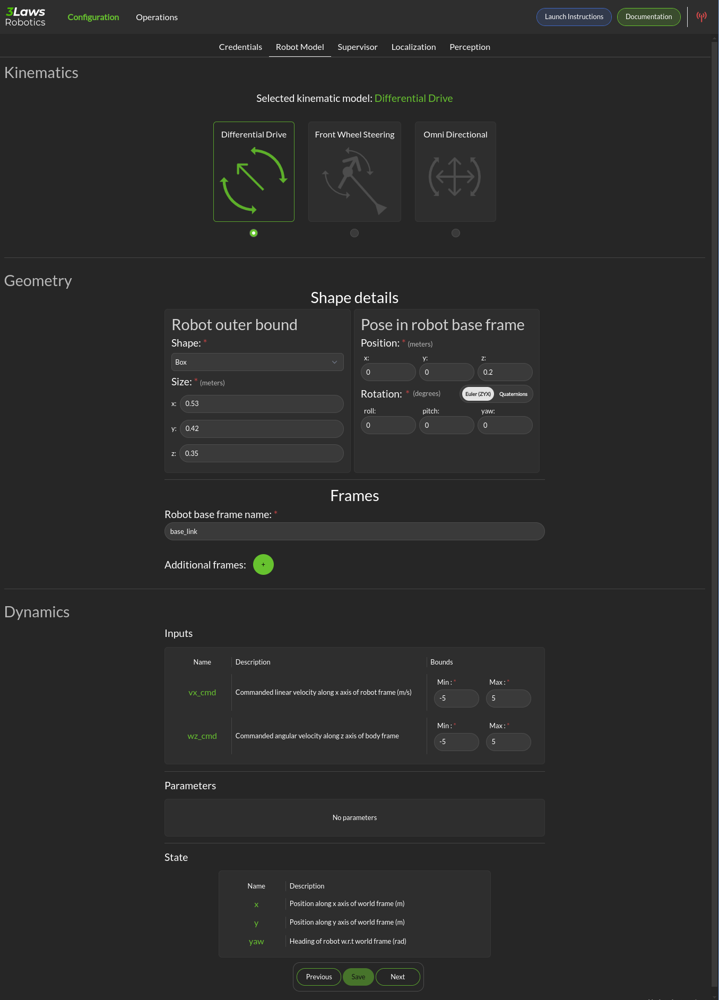

Robot Model
The Configuration page for the Robot Model is where the robot’s geometry and kinematics are specified. The model and shape are critical for predicting when collisions may occur and for calculating how to avoid them.
{kind=link}
Kinematics: Supervisor currently supports differential drive, front-steered, and omni-directional mobile platforms. A differential drive vehicle can rotate around a fixed location by driving one wheel forward and its pair in reverse. It can move forward or backwards by driving both wheels in the same direction. A front-steered vehicle operates like a car or bicycle. It can move forwards or backwards, but direction is controlled by steering, and the vehicle has a fixed wheelbase distance between the forward axle and the rear axle. An omni-directional robot is usually implemented using wheels that have a series of smaller wheels mounted at 45 degrees on the outer rim. By moving one axle forward and others backwards, the vehicle can move sideways. Rotation occurs by moving the wheels on one side forwards and the wheels on the other side in reverse.
Geometry: The vehicle’s reference coordinate frames and geometry are specified in this section.
Shape Details: The robot’s shape is used in order to calculate the distance between the outer boundaries of the robot body and any scan points. Basic shapes that are currently supported include sphere, box, capsule, point, cone and cylinder. The size entries change based on the selected shape. Cylinders and capsules both require length and radius. The difference is that a capsule will have hemispheres on the ends while the cylinder ends are flat. A box frame consists of x-length, y-length, and z-length.
Shape Pose in Robot Frame: The relative orientation of the robot’s shape with respect to the base frame needs to be specified. Note that the rotation can be specified either using quaternions or Euler angles. The quaternion order is w, x, y, z. When Supervisor is running, it is a good idea to run rviz (or rviz2) to display the orientations and frames. The coordinate frame convention used here is x: positive forward, y positive to the left, and z positive upwards. The geometric center and orientation of the shape starts as being centered on the base coordinate frame/orientation of the robot. The shape should be translated and rotated appropriately if the base coordinate frame does not align with the center.
Frames: The name of the robot base coordinate frame must be specified here. The base frame is in robot body-coordinates. It moves in space as the robot does. Additional static frames can be defined by clicking the + icon. The additional frames are static, and will follow the motion of the base robot frame.
Dynamics: The Dynamics section has 3 subsections: Input, Parameters, and State.
The Inputs section supports specification of maximum and minimum limits for the translational and rotational speeds at which the robot can be commanded. For monitoring, if these values are exceeded, a log-event describing the violation will be issued. If the Run-time Assurance Module (see Supervisor) is active, these limits will be applied to the filtered outputs. For steered vehicles, instead of limits on rotational speeds, steering limits are specified.
Parameters: The only robot type that has a parameters section is the steered robot. wheel_dx is the wheelbase length for the vehicle. origin_x is the distance from the rear axle to the robot base frame.
State: For all robot types, the State category provides the definitions of the variables that are considered as the “states”. These definitions are important when trying to create “masks” to map between the input ROS variable types and the robot states. The first, is considered state 0 (typically x position), the second is state 1 (typically y position) and the third is state 2 (typically yaw).